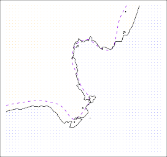
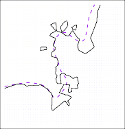

2.2.2 The Bias-Variance Trade-Off
2.2.2 편향-분산 상충 관계(The Bias-Variance Trade-Off)
The U-shape observed in the test MSE curves (Figures 2.9–2.11) turns out to be the result of two competing properties of statistical learning methods.
테스트 MSE 곡선(그림 2.9~2.11)에서 관찰되는 U자 형태는 통계적 학습 방법들의 서로 상충하는 두 가지 속성이 만들어낸 결과임이 밝혀졌습니다.

FIGURE 2.11. Details are as in Figure 2.9, using a different $f$ that is far from linear. In this setting, linear regression provides a very poor fit to the data.
그림 2.11. 그림 2.9와 기본 세부 사항은 동일하나, 선형 직선 구조와는 거리가 매우 먼 다른 함수 $f$ 를 대상으로 삼았습니다. 이 설정에서는 선형 회귀 모형이 조달 데이터에 극도로 형편없는 부적합한 측정을 제공합니다.
Though the mathematical proof is beyond the scope of this book, it is possible to show that the expected test MSE, for a given value $x_0$, can always be decomposed into the sum of three fundamental quantities: the variance of $\hat{f}(x_0)$, the squared bias of $\hat{f}(x_0)$ and the variance of the error terms $\epsilon$. That is,
수학적인 엄밀한 증명 과정까지는 이 책의 범위를 넘어서지만, 특정 조달 값 $x_0$ 지점에서 발생되는 기대 테스트 테스트 MSE 산출 지표는 모델 오류 한계의 항상 필수적인 다음 세 가지 근본 양들의 수치 덧셈 합으로 쉽게 분해돼 나뉠 수 있음이 보여집니다: 바로 투입 추정치 $\hat{f}(x_0)$ 의 분산(variance), 도출 궤적 추정치 $\hat{f}(x_0)$ 의 제곱된 편차인 한계 편향(bias), 그리고 오차를 조장하는 찌꺼기 변수 측량 항 $\epsilon$ 자체 한계 분산값입니다. 이를 수학적으로 정리하자면,
\[E(y_0 - \hat{f}(x_0))^2 = \text{Var}(\hat{f}(x_0)) + [\text{Bias}(\hat{f}(x_0))]^2 + \text{Var}(\epsilon) \tag{2.7}\]$^2$ Here the notation $E(y_0 - \hat{f}(x_0))^2$ defines the expected test MSE at $x_0$, and refers to the average test MSE that we would obtain if we repeatedly estimated $f$ using a large number of training sets, and tested each at $x_0$.
$^2$ 여기서 사용된 표기 구조인 $E(y_0 - \hat{f}(x_0))^2$ 모델 공통 수식은 수치 조달 점 $x_0$ 모델 공간에서의 기대 테스트 MSE(expected test MSE) 를 수식 지표상 측정 정의하며, 우리가 만일 통계상 많은 다대 규모 훈련 세트를 구조상 아주 수시 반복 사용해 산출 기표 $f$ 를 이끌어 연산 추정한 뒤, 이 모형을 $x_0$ 실험 점들에 하나같이 투입 평가 시험해 산출될 얻어 낼 연산 테스트 오차 추정 MSE 평균 한계치들의 값을 공식 산술 기표로 일컫습니다.
The overall expected test MSE can be computed by averaging $E(y_0 - \hat{f}(x_0))^2$ over all possible values of $x_0$ in the test set.
결론적으로 전체 궤도로 도달할 총 기대 모의 테스트 점수 MSE는 분리 이탈 테스트 데이터 세트 구도상에서 존재 접근이 가능한 지표 상의 전체 모든 개수 몫 $x_0$ 수치 무리에 대한 각 모델 개체 $E(y_0 - \hat{f}(x_0))^2$ 점수 측정을 다 같이 평균 산정하여 계산해 낼 수 있습니다.
Equation 2.7 tells us that in order to minimize the expected test error, we need to select a statistical learning method that simultaneously achieves low variance and low bias .
이 수치 공식 2.7 방정식이 핵심 대변해 일러 주는 바는, 바로 우리가 현실 실전 기대 테스트의 모델 오류 치수를 극도로 제일 최소 바닥으로 끌어내리기 위해서는 가장 낮은 훈련 분산(low variance) 에러치와 동시에 가장 낮은 극소 편향(low bias) 측정 에러율 이 단면 둘 모두를 양쪽 한꺼번에 동시 달성 보장해 취하는 우수한 예측 측정 학습 모델을 반드시 선정해 골라야 함을 가리킵니다.
Note that variance is inherently a nonnegative quantity, and squared bias is also nonnegative.
이때 분산은 본질적으로 그 측정 기표가 음수가 될 수 없는 양수 도출량 기준이며, 제곱된 편향 치수 결괏값 또한 필연적 한계 상 양수라는 점에 깊게 유의해야 합니다.
Hence, we see that the expected test MSE can never lie below Var( ϵ ), the irreducible error from (2.3).
그에 뒷받침 따라 우린 기대 예측의 테스트 오차 한도 평가 점수 기표값이 애초부터 과거 단락 모델 구조 공식 (2.3) 기본식의 근원이던 감축 축소 불능 상수 도달 오차치인 맨 밑바닥 Var( ϵ ) 수치값 선들 아래로는 아예 결코 일절 물리적 도달 하강 하락할 수 없음을 수식적으로 알 수 있습니다.
What do we mean by the variance and bias of a statistical learning method?
통계 측정 과정 기법의 평가 구조상에서 이러한 잦은 언급인 분산(variance) 그리고 수치 모델 모의의 구조적 측면인 편향(bias) 지표들은 과연 무엇을 정확히 대변하고 일컫는 걸까요?
Variance refers to the amount by which f[ˆ] would change if we estimated it using a different training data set.
분산 현상 오류 한도는 우리가 서로 다른 상이한 전혀 이면 별개의 정보 조달 기반 훈련 세트를 사용하여 모형 추정을 단행 평가했을 때 과연 함수 측면 결과로 f[ˆ] 변화가 얼마의 양만큼이나 변동 수정을 심히 차이 일으켰는가 그 궤도 결괏값 측면의 가변 변동량 수정폭을 대변 수치 지적합니다.
Since the training data are used to fit the statistical learning method, different training data sets will result in a different f[ˆ] .
훈련 세트가 통계 모델 방법론 적합 조립 기반 절차 사용에 이용되므로, 서로 상이 단절된 다른 훈련 분량들의 세트들은 결국 예측 환산에서 전혀 일치치 동등한 척도 도출이 아닌 확연히 기표상 분리 모델 도출 차이가 서로 달리 발생하는 수치 이기 f[ˆ] 변경 양산의 변화 결괏값을 수반해 분리 초래합니다.
But ideally the estimate for f should not vary too much between training sets.
그러나 사실 가장 최고 이상적인 분석 산출에서는 어떠한 단면 측정 모의 투과를 거치든 간에 진실 정답 원형에 대한 기준 추정치 지표 성격의 저 함수 도면 f 모의는 구별 여러 다양한 훈련 비교 세트군들 사이에서 극과 극 구조 등 너무 격차 심하게 치수 변동 오차 파동을 보여선 결코 안 됩니다.
However, if a method has high variance then small changes in the training data can result in large changes in f[ˆ] .
그러나 현실 모델의 모순 한계에 가려 만실 한 가지 기법 조달 예측 산법 구조 자체에 아주 심히 끔찍히 높은 평가 도출 오판 분산률 파탄 구조가 탑재 내재 존재한다면 단지 투입 훈련 단편 양에만 발생된 아주 사소한 결별 사소 오류 변경치들만으로도, 측정 분석 전반적 결과 도달로 f[ˆ] 평가 지표 수치 면에서는 오히려 아주 끔찍이 거대하고 몹시 무섭게 큰 파탄 급 파동 요동 변화를 유발 산출해 일으킵니다.
In general, more flexible statistical methods have higher variance.
일반적으로 곡률 굴절 한계 측면이 더 자유롭고 굽음 유연성을 한층 더 심하게 갖는 유연 융통 모델 통계 방식일수록, 자연히 수반되는 변경 산출 분산 오차 파동 에러 치수 수단 결과 또한 이와 비례해 필히 아주 지극히 높아집니다.
Consider the green and orange curves in Figure 2.9.
지표 도면 그림 2.9 단면에 제공 도출 대조된 요동 치는 초록 곡면과 단조로운 주황 곡선 예시들을 한번 유심히 차이 분석 고려해 주십시오.
The flexible green curve is following the observations very closely.
극한의 구부러진 조율 곡률 유연성이 투입된 저 요동 곡선 초록 분면 예측체는 나타난 측정 분포 단면 점들을 마치 기가 막힌 수준 부합으로 점을 몹시 일치하며 너무 억지로 매우 결맞추어 오밀조밀 착잡 밀착해 바짝 흡사 모방 오차 흡수 추월하며 따라갑니다.
It has high variance because changing any one of these data points may cause the estimate f[ˆ] to change considerably.
그러나 이는 궤도 내에서 해당 투입 지표 데이터 척도 모델링 지점 단 1개의 수치만 변경 차이 오류 왜곡을 조장시키면 결국 그 단편 일로 인해 후폭풍 투발로 전체 척도 분석 추정치 f[ˆ] 시스템 기조를 곧장 아주 심하게 극명 아주 현저 단박 상당히 크게 고려 측정 변경을 끔찍히 아주 심오 변동을 이끌고 일으키게 변동 초래하므로 가장 단점 결함이 한계 극 높은 큰 요동 오류 거대 분산을 파편 보입니다.

FIGURE 2.12. Squared bias (blue curve), variance (orange curve), Var ( $\epsilon$ ) (dashed line), and test MSE (red curve) for the three data sets in Figures 2.9–2.11. The vertical dotted line indicates the flexibility level corresponding to the smallest test MSE.
그림 2.12. 그림 2.9~2.11 단면상에 도식됐던 3가지 집단 환경 데이터 세트의 모델 곡률 지표 예측 모의 결괏값 도출들에 대한 각각 편향 제곱치 편차치(파란선), 측면 가변성 변화 오류 분산치(주황선), 오차 저지 최하선 최소치 Var( $\epsilon$ ) (점선), 그리고 궁극 실전 오차 변동 파탄 테스트 MSE(붉은선) 에러율 지수 기록선 등을 의미 지표 나타냅니다. 그려진 수직 배열 점선은 바로 예측 결과 각 상황의 모델 구조 곡선에서 가장 최저 테스트 MSE 바닥점에 수반 안착 부합 환산되는 수립 성적 평가 유연성 곡면 산출 치수 수준의 결정 한계를 조달 지적 가리킵니다.
In contrast, the orange least squares line is relatively inflexible and has low variance, because moving any single observation will likely cause only a small shift in the position of the line.
대조적으로 주황색 최소 제곱 선은 비교적 유연하지 않아 분산이 낮습니다. 왜냐하면 어떤 단일 관측치를 이동시키더라도 선의 위치에는 오직 작은 변화만 일어나기 때문입니다.
On the other hand, bias refers to the error that is introduced by approximating a real-life problem, which may be extremely complicated, by a much simpler model.
반면, 편향(bias) 은 매우 복잡할 수 있는 현실 세계의 문제점을 훨씬 단순한 모델로 근사할 때 발생하여 도입되는 오차를 의미합니다.
For example, linear regression assumes that there is a linear relationship between Y and X 1 , X 2 , . . . , Xp .
예를 들어, 선형 회귀는 Y 와 예측 변수 X 1 , X 2 , . . . , Xp 들 사이에 선형적인 관계가 존재한다고 가정합니다.
It is unlikely that any real-life problem truly has such a simple linear relationship, and so performing linear regression will undoubtedly result in some bias in the estimate of f .
현실의 어떤 문제가 실제로 이처럼 단순한 선형 구조만 가질 가능성은 낮으므로 선형 회귀를 돌리면 의심할 여지 없이 함수 f 의 추정치에 약간의 편향이 발생합니다.
In Figure 2.11, the true f is substantially non-linear, so no matter how many training observations we are given, it will not be possible to produce an accurate estimate using linear regression.
도표 그림 2.11에서 진짜 본질 f 는 아주 심각하게 비선형적이므로 훈련 데이터가 아무리 많이 확보되더라도 선형 회귀로는 절대 정확한 추정을 해낼 수 없습니다.
In other words, linear regression results in high bias in this example.
다시 말해, 이 예시 상황에서 선형 회귀 모형 기법은 극명하게 높은 심각한 큰 편향을 초래합니다.
However, in Figure 2.10 the true f is very close to linear, and so given enough data, it should be possible for linear regression to produce an accurate estimate.
그러나 반대로 반전하여 그림 2.10의 기저 진짜 정답 모델 f 구조는 직선 선형 형태 자체에 거의 근접해 맞닿아 있으므로 오직 충분 넉넉한 정보 관측량 데이터 무리만 조건 주어지면 단편적인 선형 회의를 사용해도 아주 좋은 기막힌 측정 최상 정확도 추정 모의 한계를 거뜬히 결론 산출 달성 도출할 수 있습니다.
Generally, more flexible methods result in less bias.
일반적으로 더 유연한 측정 방식을 구사 사용할수록 예측 치 편향은 결론적으로 낮고 적어집니다.
As a general rule, as we use more flexible methods, the variance will increase and the bias will decrease.
어김없는 규칙 법칙으로 우리가 유연성을 크게 더 갖춘 더 강력한 방식 기법을 적용 동원할수록 단면 분산은 높아 성장하고 단점 편향 측정치는 점차 떨어져 축소 낮아집니다.
The relative rate of change of these two quantities determines whether the test MSE increases or decreases.
이 두 도출 측정 평가 수량 한도 치수의 양상 상대적인 변화 변동 증감 굴곡 등락률 비율 곡면 속도가 결국 미지 척도의 테스트 평가 종착 테스트 전용 평가 오차 지수인 테스트 MSE를 증가 혹은 하락 감소시킬지를 전격 한계 통제 좌우 결정합니다.
As we increase the flexibility of a class of methods, the bias tends to initially decrease faster than the variance increases.
방법의 유연성을 증가시킴에 따라, 처음에는 편향이 분산 증가 속도보다 빠르게 감소하는 경향이 있습니다.
Consequently, the expected test MSE declines.
결과적으로 기대 테스트 MSE는 하락합니다.
However, at some point increasing flexibility has little impact on the bias but starts to significantly increase the variance.
그러나 어느 시점이 되면 유연성 증가는 편향에 거의 영향을 주지 못하고 분산만 크게 증가시키기 시작합니다.
When this happens the test MSE increases.
이러한 일이 발생하면 테스트 MSE는 증가합니다.
Note that we observed this pattern of decreasing test MSE followed by increasing test MSE in the right-hand panels of Figures 2.9–2.11.
그림 2.9~2.11 우측 패널에서 테스트 MSE가 처음에는 감소하다가 이후 증가하는 패턴을 관찰할 수 있습니다.
The three plots in Figure 2.12 illustrate Equation 2.7 for the examples in Figures 2.9–2.11.
그림 2.12의 세 가지 도표는 그림 2.9~2.11 예시에 대한 수식 2.7을 보여줍니다.
In each case the blue solid curve represents the squared bias, for different levels of flexibility, while the orange curve corresponds to the variance.
각 경우 파란색 실선은 각기 다른 유연성 수준에서의 편향 제곱을, 주황색 곡선은 분산을 나타냅니다.
The horizontal dashed line represents Var( ϵ ), the irreducible error.
수평 점선은 축소 불가능한 오차 Var( ϵ ) 를 의미합니다.
Finally, the red curve, corresponding to the test set MSE, is the sum of these three quantities.
마지막으로 테스트 세트 MSE에 대응하는 빨간색 곡선은 이 세 가지 양의 합입니다.
In all three cases, the variance increases and the bias decreases as the method’s flexibility increases.
세 가지 경우 모두, 방법의 유연성이 증가함에 따라 분산은 증가하고 편향은 감소합니다.
However, the flexibility level corresponding to the optimal test MSE differs considerably among the three data sets, because the squared bias and variance change at different rates in each of the data sets.
그러나 세 데이터 세트에서 편향 제곱 및 분산 변화율이 서로 다르기 때문에 최적의 테스트 MSE를 달성하는 유연성 수준은 상이합니다.
In the left-hand panel of Figure 2.12, the bias initially decreases rapidly, resulting in an initial sharp decrease in the expected test MSE.
그림 2.12 좌측 패널에서는 처음에 편향이 급격히 하락하여 기대 테스트 MSE 또한 초기에 크게 감소합니다.
On the other hand, in the center panel of Figure 2.12 the true f is close to linear, so there is only a small decrease in bias as flexibility increases, and the test MSE only declines slightly before increasing rapidly as the variance increases.
반면 그림 2.12의 중앙 패널은 진짜 f 가 선형에 가까우며, 따라서 유연성 증가에 따른 편향 하락폭이 작습니다. 결과적으로 테스트 MSE도 초기에 약간 하락하다가 분산 증가로 인해 급격하게 증가합니다.
Finally, in the right-hand panel of Figure 2.12, as flexibility increases, there is a dramatic decline in bias because the true f is very non-linear.
마지막으로 그림 2.12 우측 패널에서는 진정한 함수 f 가 매우 비선형이므로, 유연성이 증가함에 따라 편향이 극적으로 하락합니다.
There is also very little increase in variance as flexibility increases.
이 도식에서는 유연성이 증가하더라도 분산 또한 극히 소량만 증가합니다.
Consequently, the test MSE declines substantially before experiencing a small increase as model flexibility increases.
결과적으로 테스트 MSE는 상당히 떨어진 후에 모형 유연성 증가에 발맞춰 서서히 극히 작게 조금만 증가합니다.
The relationship between bias, variance, and test set MSE given in Equation 2.7 and displayed in Figure 2.12 is referred to as the bias-variance trade-off .
수식 2.7에 주어지고 그림 2.12에 시연된 편향, 분산, 그리고 테스트 세트 MSE 사이의 관계를 가리켜 즉 편향-분산 상충 관계(bias-variance trade-off) 라고 일컫습니다.
Good test set performance of a statistical learning method requires low variance as well as low squared bias.
통계적 학습 방법에서 훌륭한 테스트 세트 검증 성능 결과를 달성하려면, 필히 달성을 위한 측정에서 편향 제곱 수치도 지극히 낮아야 하지만 그와 동시에 오차 분산 지표도 매우 낮아야만 합니다.
This is referred to as a trade-off because it is easy to obtain a method with extremely low bias but high variance (for instance, by drawing a curve that passes through every single training observation) or a method with very low variance but high bias (by fitting a horizontal line to the data).
이것이 흔히 상충 관계(trade-off)라 규정되어 불리는 이유는, 우리가 마음만 먹는다면 아주 편향이 낮고 분산이 몹시 거대히 높은 측정 방식(예: 모든 모의 검증 점을 정확히 꿰뚫는 곡선 모형 수립)을 선택하거나 혹은 역으로 이와 아주 달리 편향은 높지만 분산이 작은 측정 모형(예: 수평선 예측 모의 하나를 대충 끼워 맞춤) 등 그 어떤 극단적인 조달 분석 시스템 측정 조율 모형이라도 무척 간단 쉽게 만들어 아주 단번 전개 적용 취해 볼 수 있기 때문입니다.
The challenge lies in finding a method for which both the variance and the squared bias are low.
우리의 핵심 과제는 바로 분산과 편향 제곱 이 두 수치가 모두 낮게 도출되는 최고의 효율 기법을 찾아내는 것입니다.
This trade-off is one of the most important recurring themes in this book.
이 상충 관계 한계는 본 도서 전체에서 가장 중요하게 반복 전개되는 주제 중 하나입니다.
In a real-life situation in which f is unobserved, it is generally not possible to explicitly compute the test MSE, bias, or variance for a statistical learning method.
함수 f 를 실제로는 직접 관측할 수 없는 현실 세계의 대다수 상황에서는 사실 통계적 기계 학습 기법에 대하여 테스트 MSE, 편향, 분산 수치를 명백하게 계산해 내는 것이 보편적으로 불가능합니다.
Nevertheless, one should always keep the bias-variance trade-off in mind.
그럼에도 불구하고, 우리는 항상 편향과 분산의 상충 관계를 깊이 명심하고 새겨 두어야만 합니다.
In this book we explore methods that are extremely flexible and hence can essentially eliminate bias.
이 서적에서는 매우 고도로 유연하여 결과상 편향 요인을 본질적으로 배제해 제거할 수 있는 방법들을 심도 있게 탐구할 것입니다.
However, this does not guarantee that they will outperform a much simpler method such as linear regression.
그러나 그렇다고 해서 이 고도화 방법들이 선형 회귀처럼 훨씬 단순한 측정 기법보다 반드시 예측 우수 성과를 달성할 것이라고는 그 누구도 보장할 수 없습니다.
To take an extreme example, suppose that the true f is linear.
극단적인 예로 그림 2.10처럼 진짜 모델 $f$ 가 직선 형태라 가정합시다.
In this situation linear regression will have no bias, making it very hard for a more flexible method to compete.
이 특수한 직선 환경에서 선형 회귀는 편향 차수가 완전히 0이 되므로, 어떠한 유연한 무장 기법일지라도 이 선형 성적에 결코 우위로 맞서 경쟁하기가 무척매우 힘들어집니다.
In contrast, if the true f is highly non-linear and we have an ample number of training observations, then we may do better using a highly flexible approach, as in Figure 2.11.
반대로 기저 속성 f 가 고도 비선형을 이루고 우리 수중에 충분한 관측 훈련 데이터가 넉넉히 제공된다면, 앞서 그림 2.11에서 다뤘듯 매우 유연한 곡면 방식을 기용함으로써 실측 성과를 우수하게 한층 높일 수 있습니다.
In Chapter 5 we discuss cross-validation, which is a way to estimate the test MSE using the training data.
훗날 제5장에서는 이러한 실제 테스트 MSE 지수를 우리 손에 쥔 훈련 데이터를 거치로 사용해 대신 추정해 보는 기능인 교차 검증에 대해 깊이 논의합니다.
Sub-Chapters (하위 목차)
현재 2.2 단원 소속 문서입니다. 상위 경로(Assessing Model Accuracy)로 돌아가기